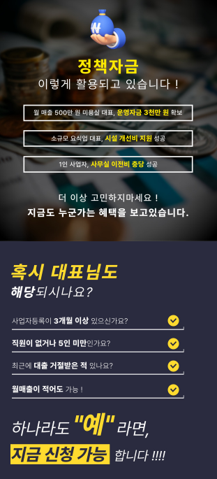
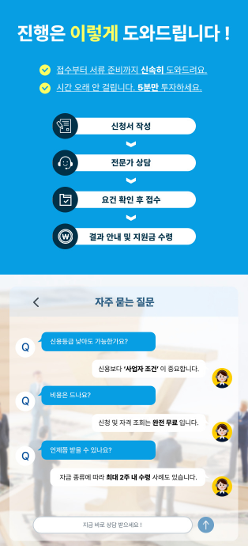
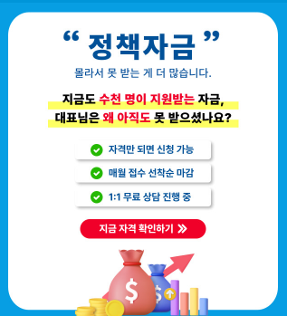

사업을 운영하다 보면 시설 투자나 운영비, 사업 확장 등 다양한 이유로 자금과 지원제도에 대한 정보를 알아보게 됩니다. 사업자 정책 지원센터 관련 정보를 찾고 있다면 먼저 현재 사업의 상황과 필요한 목적을 정리한 뒤 자신에게 적용될 수 있는 제도를 확인하는 것이 중요합니다.
사업자 정책 지원센터 관련 정보는 어떻게 확인할까요?
사업자를 대상으로 안내되는 지원제도는 사업 형태와 업종, 운영 기간, 지역 및 신청 시점 등에 따라 조건이 달라질 수 있습니다. 따라서 특정 제도가 모든 사업자에게 동일하게 적용된다고 생각하기보다는 자신의 사업 조건을 기준으로 확인하는 것이 좋습니다.
지원 관련 정보를 알아볼 때는 신청 대상과 지원 목적, 필요한 서류와 신청 기간 등을 함께 확인해야 합니다. 특히 공식적으로 운영되는 정책이나 지원사업은 해당 기관의 최신 공고를 최종 기준으로 확인하는 것이 중요합니다.
현재 사업 상황과 필요한 자금의 목적을 먼저 정리하세요
사업자 지원 관련 정보를 확인하기 전에는 현재 운영하고 있는 사업의 기본적인 상황을 정리해두는 것이 좋습니다. 사업을 시작한 시점과 업종, 매출 상황 등을 미리 확인하면 필요한 정보를 보다 구체적으로 살펴볼 수 있습니다.
자금이 필요한 경우에도 단순히 금액만 정하기보다는 운영자금인지 시설 투자 목적의 자금인지, 사업 확장을 위한 것인지 등 사용 목적을 구체적으로 정리하는 것이 좋습니다.

사업 운영 기간
사업 시작 시점과 현재까지의 운영 기간을 확인해보세요.
사업 업종
운영 중인 업종과 사업 형태에 따라 적용 조건이 달라질 수 있습니다.
자금 사용 목적
운영, 시설, 확장 등 필요한 목적을 구체적으로 정리해보세요.
필요한 시기
자금이나 지원이 필요한 시점을 미리 확인하는 것도 중요합니다.
상담을 신청하기 전에 기본 정보를 준비해보세요
사업자 관련 상담을 받을 때 현재 사업에 대한 기본적인 내용을 미리 정리해두면 필요한 정보를 확인하는 데 도움이 될 수 있습니다. 사업자등록 정보와 사업 운영 현황 등 상담에 필요한 내용을 준비해두면 보다 원활하게 상담을 진행할 수 있습니다.
다만 개인정보나 사업 관련 중요 서류를 제출해야 하는 경우에는 해당 상담 서비스의 운영 주체와 개인정보 처리방침, 정보 이용 목적 등을 먼저 확인하는 것이 좋습니다.

지원 신청 전 실제 조건과 비용 여부를 확인하세요
사업자 지원 관련 상담이나 서비스를 이용할 때는 상담을 신청하는 것만으로 특정 지원을 받을 수 있다고 단정해서는 안 됩니다. 실제 지원 여부는 각각의 제도와 상품이 정한 심사 기준과 신청 자격에 따라 달라질 수 있습니다.
상담 과정에서 별도의 수수료나 비용이 발생하는지도 확인하고, 금융상품을 안내받는 경우에는 금리와 상환 조건, 중도상환 관련 조건 등 중요한 내용을 충분히 확인한 뒤 판단해야 합니다.
